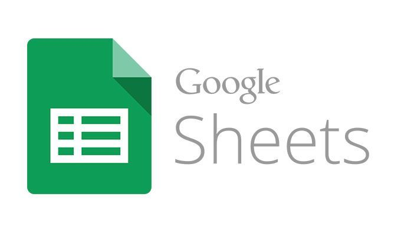
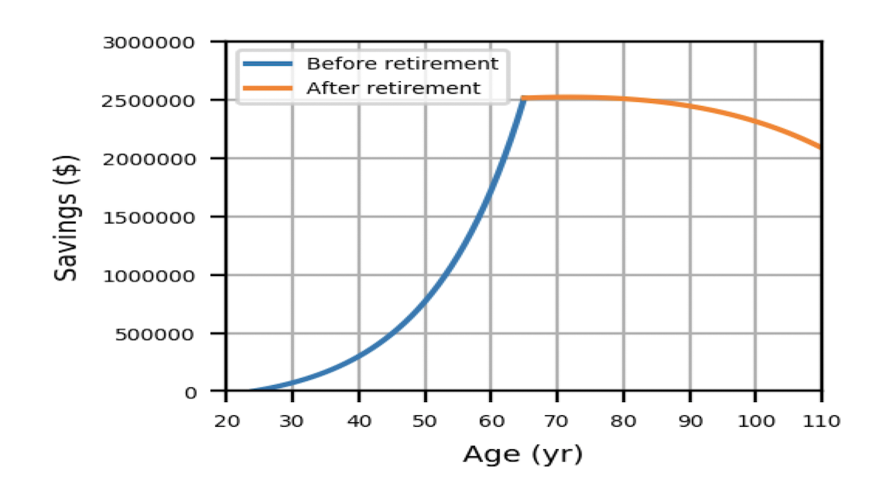

Home Hub
I created a home hub to control my smart home accessories.
The front-end is running HTML, CSS, and Javascript in a dynamic one-page design to avoid switching pages to get to different views.
It is running on an iPad mounted to the wall for ease of access. The web interface allows access to the Hub from any device with a web browser connected to the local network.
The backend is running Flask on a Python script. The Python script is running on a Raspberry Pi 3 Model B. The script utilizes listens to HTTP requests and handles them accordingly.
My apartment uses Philips Hue LED light bulbs and the Python script uses HTTP requests to the Philips Hue Bridge to control lights and sensors. A circuit was created with the Pi to include an IR LED to be placed in front of the television. The LED is programmed to mimic the OEM remote sequences to control the TV.
Canvas Assignment Editor
Working as a TA at the University of Wisconsin - Madison, I realized that assigning different due dates for different lab sections was a painful and manual process. Especially when transitioning between semesters, we could import and offset due dates when the due dates are constant for every section. However, we could not do this if the section due dates were different. Assigning a single lab due date to could take upwards of a minute for each section - when you have 4 sections and 16 labs, that is over an hour of tedious work, mostly just waiting for the page to refresh.
Luckily, Canvas provides an API for managing Canvas courses. Leveraging this API, I created a Python app that would download a Canvas course's assignments to a TSV file (easily opened in Excel or Google Sheets). Here, the instructors could update the due dates, even using equations if lab section due dates are evenly spaced out, in a matter of minutes and simply upload it back to Canvas.
This project was riddled with difficulty as sections and assignments were all labeled by ID number and these had to be related back to section/assignment name so that the end-user could easily identify what they he/she was working with. After download, the JSON-formatted data is reorganized into TSV format for the end-user and then converted back to JSON before uploading and updating the Canvas site. If you are an end-user of this project, and you have requests, feel free to contact me if you have any questions.
See the code and learn more at GitHub.Digit Classifier
My team and I created a 2-layer neural network to predict hand drawn digits. The neural network was created by hand (without the use of external NN libraries). Using Semeion Handwritten Digit Data Set, we use forward and back propagation to update weights on Nodes and output using a soft-max function to identify hand-written digits. After developing the learning model using the precompiled data set, we implemented a GUI that allows the user to draw onto a Canvas and the model immediately predicts the digit.
Using a 2-layer neural network with rather simple learning methods allowed us to achieve roughly 90% accuracy on a testing set of data. We hope to leverage what we learned and create a more complex model that would allow us to achieve much greater accuracy.
See the code and learn more at GitHub.Retirement Calculator
I created a retirement calculator to show Year-over-Year earnings and expenses based on input parameters. It can extrapolate retirement assets and the point of asset depletion. Each year can be explored in the detailed tab while summary information is provided by a graph and as text. Users can manipulate input parameters to compare different scenarios.
Additionally, users can save default values such that when additional runs are completed, values do not need to all be entered again. If you are interested in using this for yourself or modifying it, see the GitHub repository. If you have questions about it, feel free to contact me.
See the code and learn more at GitHub.Object Recognition Robotic Arm
For a robotics project, my team created a 6 axis robot with an attached overhead camera. The camera is attached to a computer running YOLOv3 on the Python openCV library and is used to find target objects. The Python script sends coordinates of the objects to the robot in the robot-coordinate frame.
The robot is running its own Python script on a Raspberry Pi. Inverse kinematics were used to move the robot end of arm to the target location and pick the images. The images were all prepared with magnets and the robot end of arm was switching an electromagnet on to grab a part. The robot would take the objects to the drop off and continue to pick up target objects until none remain.
IoT with Google Sheets
This project was designed for the Biomedical Engineering Department at the University of Wisconsin - Madison. For the Introduction to Engineering Design course, students had to create a bioreactor complete with temperature control and monitoring. The course wanted to move away from local SD card data logging and transition to internet-based data logging for many reasons including reliability, versatility, and ease of use.
I designed a new data logging system from the ground up leveraging the NodeMCU ESP8266 microcontroller. I also learned how to use the Google Apps Script and wrote a script to wait for received data, log the time of the data, and populate a spreadsheet. There were many "bells and whistles" added to the script once the basic needs were met. These include email notification on out-of-spec data, graphing, and the ability to routinely export and clear the data to maintain speed in the spreadsheet. I worked with our IT team to ensure connectivity for our WiFi microcontrollers on the University network and with the instructors to implement the system for the course starting in 2019.
There is a lot more to this project than I can fit on this page. Contact me to learn more about my steps on creating this system and see the GitHub page for steps on implementing it yourself.
Home Hub
IoT with Google Sheets
Assignment Editor
Retirement Calculator
Object Recognition Robot